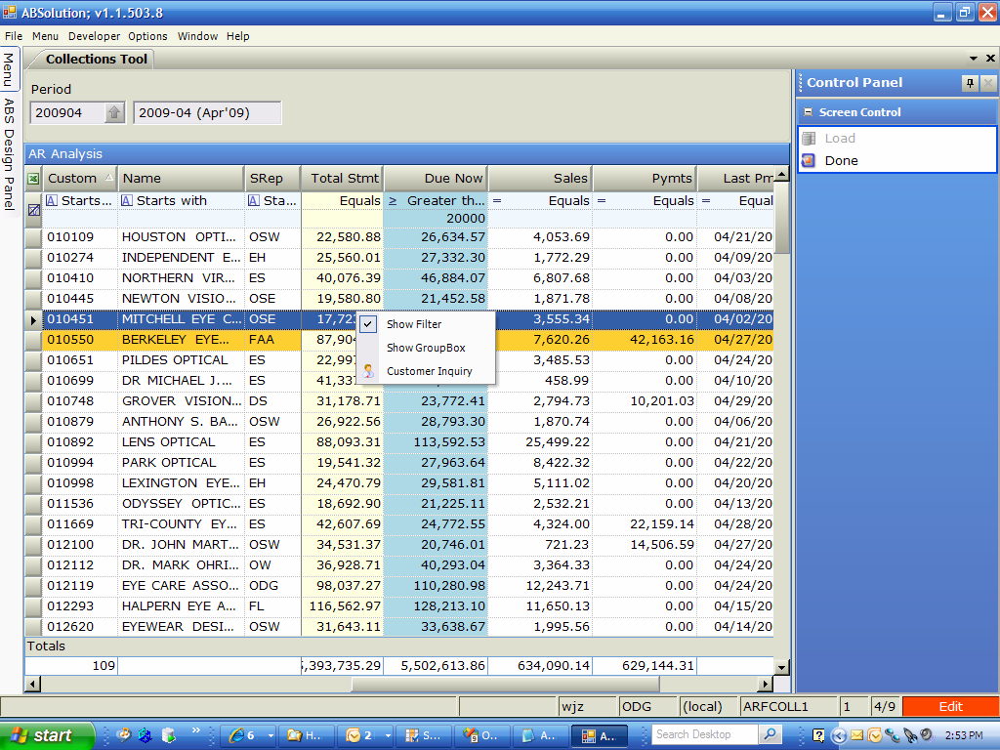

Collections Tool
This screen is useful to show where your AR risk is growing.
hi mom
You enter the statement period (April), and the screen shows, by customer (code, name, and srep):

1) Statement Total and Aging
2) Total Due Now
3) Sales Since the Statement
4) Payments Since the Statement
5) Date of Last Payment
You can filter these customers – I filtered the example below to customers who owe $20,000 or more – there are 111 of them.&edsp;&edsp;Ossip is the only one that has not sent in a payment in April.
You can right click on the grid to do filtering, grouping, or to go straight into Customer Inquiry to get a more detailed look at the customer.
Here are those 111 customers sorted by Amt Due Now, descending:
You can right click on the grid to do filtering, grouping, or to go straight into Customer Inquiry to get a more detailed look at the customer.
Here are those 111 customers sorted by Amt Due Now, descending:
Here are those 111 customers sorted by AR Growth:
Here are 384 accounts with AR over $10.000, sorted by Over 90 – some have not paid since Jan or Feb: